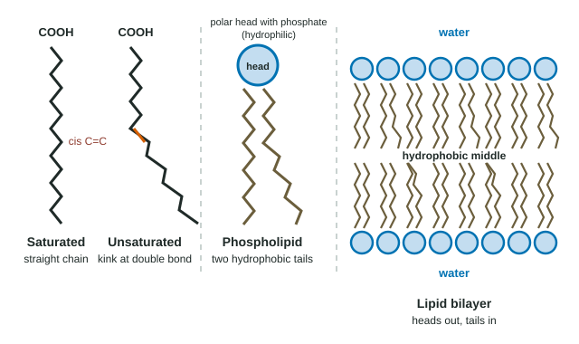
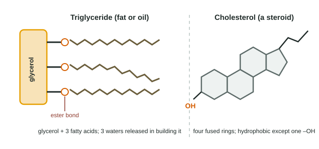

Lipids are the odd family. They are not polymers, they come in many shapes, and what unites them is one property: they do not mix with water. This page shows how that one property lets them store energy, waterproof surfaces, carry signals and form the boundary of every cell.
What makes a lipid a lipid
A lipid is a biological molecule made mostly of carbon and hydrogen, with few polar groups. C–H and C–C bonds are nonpolar, so lipids are hydrophobic. They are grouped together by this behavior, not by a shared monomer, and they are not polymers.
Fatty acids
A fatty acid is a long hydrocarbon chain, usually 12 to 20 carbons, with a carboxyl group (–COOH) at one end. The chain is the nonpolar "tail" (the hydrocarbon tail); the carboxyl group is the small polar end.
- A saturated fatty acid has only single C–C bonds. Every carbon carries as many hydrogens as it can, so the chain is "saturated" with hydrogen. Its chain is straight (a gentle zigzag).
- An unsaturated fatty acid has at least one C=C double bond. In natural fats the double bond is usually cis (both chain parts on the same side), which puts a rigid bend, about 30°, in the chain (Figure 1).

Shape decides melting point. Straight chains lie close together, like pencils in a box, and the many weak attractions along their length hold them in a solid. Kinked chains cannot line up, so they touch less, attract each other less and fall apart into a liquid at a lower temperature.
| Saturated | Unsaturated (cis) | |
|---|---|---|
| C=C double bonds | None | One or more |
| Chain shape | Straight | Kinked at each cis double bond |
| Packing | Tight | Loose |
| At room temperature | Solid (fats) | Liquid (oils) |
| Typical sources | Butter, lard, meat | Olive, corn and fish oils |
Worked example: reading melting points. Stearic acid (18 carbons, no double bonds) melts at 70 °C. Oleic acid (18 carbons, one cis double bond) melts at 13 °C. Linoleic acid (18 carbons, two cis double bonds) melts at −5 °C. Which variable changes, and what does it do?
The chain length is the same (18 carbons), so the difference comes from the double bonds. One kink lowers the melting point by 57 °C; a second kink lowers it a further 18 °C. At a room temperature of about 22 °C, stearic acid is solid and the other two are liquid.
Food makers once turned oils into solid fats by adding hydrogen to some of their double bonds ("partially hydrogenated" oil). The process also flipped some double bonds into the trans form, which leaves the chain nearly straight. These trans fats pack almost like saturated fats and raise heart disease risk, and many countries have now banned them.
Triglycerides: fats and oils
A triglyceride is one glycerol (a three-carbon molecule with three –OH groups) joined to three fatty acids. Each fatty acid's carboxyl group reacts with one of glycerol's –OH groups by dehydration synthesis, forming an ester bond and releasing one water, so building one triglyceride releases three waters (Figure 2). A triglyceride has lost its polar groups in making those links, so it is almost entirely nonpolar: oil does not dissolve in water but gathers into separate drops.

Triglycerides are the body's long-term energy store. A gram of fat holds about 37 kJ of energy, more than twice the 17 kJ in a gram of carbohydrate or protein, because fatty acid chains are packed with C–H bonds and contain little oxygen. Stored fat also cushions organs and, under the skin of whales and seals, insulates against the cold.
Worked example: why store fat? A small bird needs 370 kJ for a long nonstop flight. How much fuel must it carry as fat, and how much as glycogen?
Fat: 370 kJ ÷ 37 kJ/g = 10 g. Glycogen: 370 ÷ 17 = 21.8 g. Fat does the job at less than half the mass. (In real cells glycogen is also stored with about 2 to 3 g of water per gram, which makes the gap even bigger.)
Phospholipids and the lipid bilayer
A phospholipid is like a triglyceride with one fatty acid replaced by a phosphate group, which is usually linked to another small charged group. That gives the molecule two very different ends: a polar, charged hydrophilic head and two nonpolar hydrophobic tails. A molecule with both a hydrophilic and a hydrophobic part is amphipathic.
Drop phospholipids into water and they arrange themselves, with no energy needed: the heads face the water, and the tails hide from it by facing each other. The result is a sheet two molecules thick, a lipid bilayer. Every cell membrane, the thin boundary that encloses a cell and the spaces inside it, is built on a phospholipid bilayer. (Unit 2 adds the proteins and explains how substances cross it.)
The bilayer's middle is an oily layer. Whether that layer stays flexible depends on its tails: more unsaturated, kinked tails keep it from stiffening in the cold, the reason cold-water fish and the cells in a reindeer's lower legs use more unsaturated fatty acids.
Steroids
Steroids are lipids whose carbon skeleton is four fused rings. They look nothing like fats, but they are just as hydrophobic. Two kinds matter here:
- Cholesterol sits between the phospholipids of animal cell membranes, where it steadies the membrane against changes in temperature. Your body uses it to make other steroids.
- Steroid hormones, such as testosterone and estrogen, are hormones made from cholesterol. Being hydrophobic, they can slip through the oily middle of a membrane into a cell.